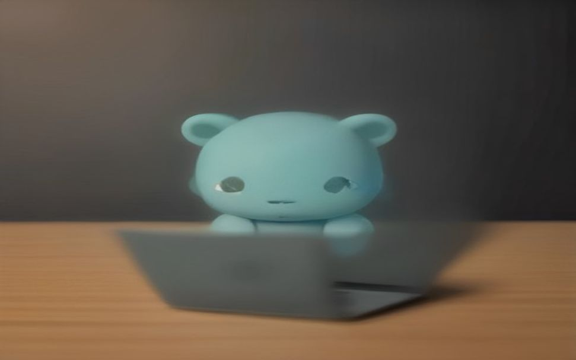

🎨 **پرامپت وایرال اینستاگرام برای Recraft V3**
📰 اگه خروجی باکیفیت و سبک خاص میخوای، **Recraft V3** بهترین مدل تصویرسازه که سبکهای خمیری و استاپموشن رو دقیق اجرا میکنه.
1️⃣ وارد **Recraft.ai** شو و مدل رو روی **Recraft V3** بذار.
2️⃣ این پرامپت دقیق رو کپی کن و کلمه **[Brand]** رو تغییر بده:
`Adorable claymation style scene of a cute plush robot using [Brand] on a tiny laptop, soft studio lighting, stop-motion aesthetic, ultra-detailed textures.`
3️⃣ دکمه Generate رو بزن تا خروجی تحویل بگیری.
🔹 پلن رایگان روزانه **۵۰ کریدیت** میده که برای **۵0 تصویر** کافیه.
🔹 سرعت تولید **زیر ۱۰ ثانیه** است و پلن Pro ماهانه **۲۰ دلار** هزینه داره.
🚀 عضویت در کانال تلگرام